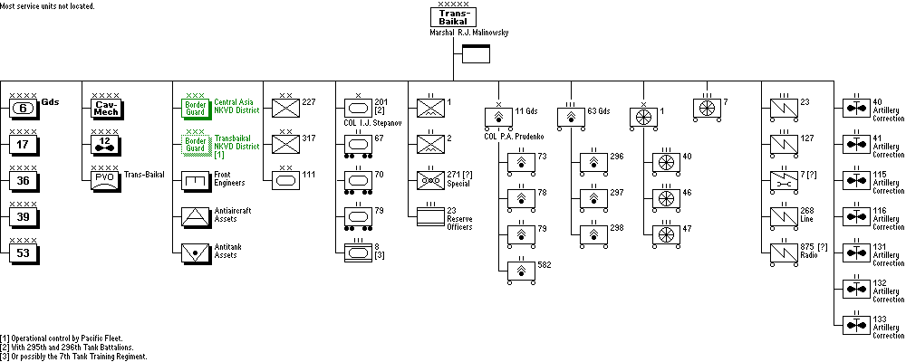

| World War II Armed Forces — Orders of Battle and Organizations | Last Updated 16.09.2015 |
Soviet Armed Forces
In cooperation with Marek Suplat
In cooperation with Marek Suplat
Trans-Baikal Front, Far East Command
9 August 1945
9 August 1945
